25 médias · manifeste : ~/nexora-creative-data/site-medias/manifest.json · généré le 2026-11-02T03:22:09
code-poste
image · 2560x1440, 1152x1440, 810x1440 · 0.6 Mo (toutes déclinaisons)
Page Code : poste de développeur la nuit, pluie sur la vitre ; l’écran de code est volontairement flouté au post-traitement (aucun texte lisible). Ombres relevées (gamma 0,8).
prompt
A minimalist developer desk at night, a large dark monitor showing abstract blurred lines of colored code (unreadable, out of focus), a mechanical keyboard with a soft backlight, a terminal glow in cyan, a cup of coffee, rain on the window behind, cinematic shallow depth of field, the screen content deliberately blurred so nothing can be read. Photorealistic cinematic photograph, shot on a large-format digital cinema camera, 35mm anamorphic lens, dark low-key mood but well exposed, details clearly readable in the shadows, grazing light, fine cyan light (#3EC8FF) as the main accent, cold blue-black palette, subtle film grain, high dynamic range, ultra detailed, sharp focus, no text anywhere, no logo, no lettering, no people.
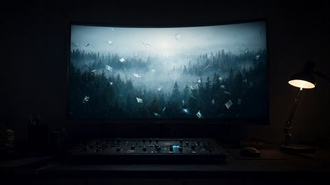
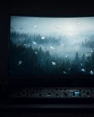
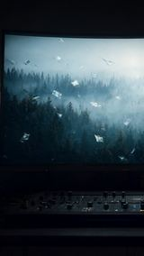
creative-atelier
image · 2560x1440, 1152x1440, 810x1440 · 1.1 Mo (toutes déclinaisons)
Page Creative : atelier sombre, grand écran avec une forêt boréale brumeuse, feuillets de lumière qui flottent, console d’étalonnage. Ombres relevées (gamma 0,8).
prompt
A dark creative studio at night, a large curved monitor on a black desk showing a breathtaking cinematic image of a misty boreal forest at dawn, around the monitor delicate sheets of light float in the air like projected film frames, color grading control surface with knobs, a single warm lamp, cyan reflections on the desk. Photorealistic cinematic photograph, shot on a large-format digital cinema camera, 35mm anamorphic lens, dark low-key mood but well exposed, details clearly readable in the shadows, grazing light, fine cyan light (#3EC8FF) as the main accent, cold blue-black palette, subtle film grain, high dynamic range, ultra detailed, sharp focus, no text anywhere, no logo, no lettering, no people.
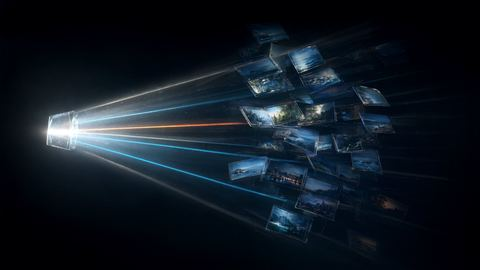
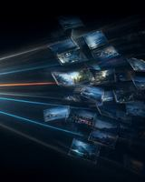
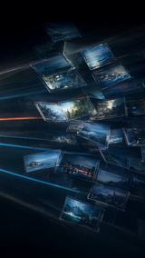
creative-lumiere
image · 2560x1440, 1152x1440, 810x1440 · 1.5 Mo (toutes déclinaisons)
Page Creative : un rayon traverse un prisme et devient des images (paysages) qui flottent ; rayons ion et un rayon chaud. Ombres relevées (gamma 0,85).
prompt
Abstract cinematic image: a beam of white light passes through a glass prism in the dark and opens into a fan of thin rays that turn into floating translucent film frames, each frame showing a different tiny landscape (ocean, forest, city at night), deep black background, cyan and one warm orange ray, fine dust in the light. Photorealistic cinematic photograph, shot on a large-format digital cinema camera, 35mm anamorphic lens, dark low-key mood but well exposed, details clearly readable in the shadows, grazing light, fine cyan light (#3EC8FF) as the main accent, cold blue-black palette, subtle film grain, high dynamic range, ultra detailed, sharp focus, no text anywhere, no logo, no lettering, no people.
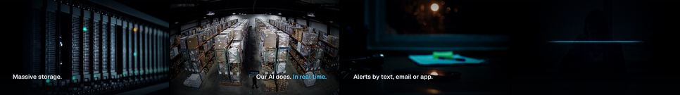
film-surveillance-en-16x9
vidéo · 1920x1080 · 40.5 s · en · H.264 22.5 Mo / WebM 8.5 Mo
Film de la page Surveillance IA (/solutions/surveillance-ia) : message clé, détection, alertes, rapports.
prompt
"prompts dans marketing/nexora/refonte-medias/plans.py (groupes surv)"
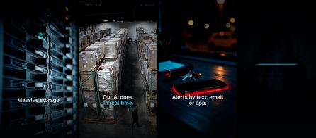
film-surveillance-en-9x16
vidéo · 1080x1920 · 40.5 s · en · H.264 15.0 Mo / WebM 9.4 Mo
Film de la page Surveillance IA (/solutions/surveillance-ia) : message clé, détection, alertes, rapports.
prompt
"prompts dans marketing/nexora/refonte-medias/plans.py (groupes surv)"
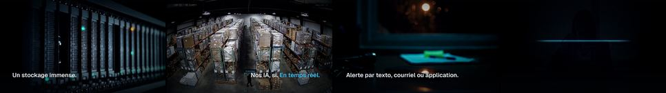
film-surveillance-fr-16x9
vidéo · 1920x1080 · 40.5 s · fr · H.264 22.4 Mo / WebM 8.5 Mo
Film de la page Surveillance IA (/solutions/surveillance-ia) : message clé, détection, alertes, rapports.
prompt
"prompts dans marketing/nexora/refonte-medias/plans.py (groupes surv)"
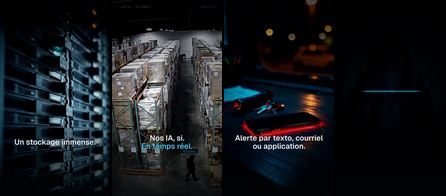
film-surveillance-fr-9x16
vidéo · 1080x1920 · 40.5 s · fr · H.264 15.0 Mo / WebM 9.5 Mo
Film de la page Surveillance IA (/solutions/surveillance-ia) : message clé, détection, alertes, rapports.
prompt
"prompts dans marketing/nexora/refonte-medias/plans.py (groupes surv)"
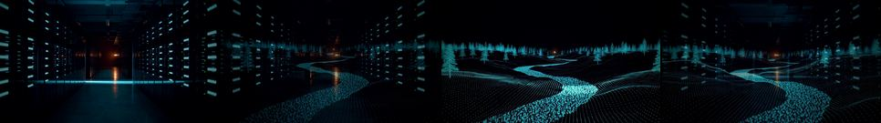
hero-boucle-16x9
vidéo · 1920x1080 · 12.0 s · aucune (muette, sans texte) · H.264 5.2 Mo / WebM 4.1 Mo
Boucle muette du héros de l’accueil (lecture auto, en boucle, muette ; texte posé par le site en HTML).
prompt
{"allee": "integrated_multimodal_description: [Shot 1] Live-action, cinematic, photorealistic. A perfectly smooth, slow push-in along the central aisle of a vast silent data center at night, symmetrical one-point perspective, tall black server racks on both sides receding into darkness, thousands of tiny cyan status lights glowing in precise horizontal rows and blinking softly, thin haze hanging in the air, a fine horizontal beam of cyan light slowly sweeps across the aisle from left to right, the polished dark concrete floor reflects every light, far away at the vanishing point a single warm
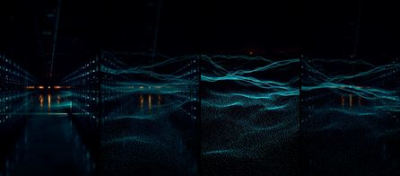
hero-boucle-9x16
vidéo · 1080x1920 · 12.0 s · aucune (muette, sans texte) · H.264 5.0 Mo / WebM 4.3 Mo
Boucle muette du héros de l’accueil (lecture auto, en boucle, muette ; texte posé par le site en HTML).
prompt
{"allee": "integrated_multimodal_description: [Shot 1] Live-action, cinematic, photorealistic. A perfectly smooth, slow push-in along the central aisle of a vast silent data center at night, symmetrical one-point perspective, tall black server racks on both sides receding into darkness, thousands of tiny cyan status lights glowing in precise horizontal rows and blinking softly, thin haze hanging in the air, a fine horizontal beam of cyan light slowly sweeps across the aisle from left to right, the polished dark concrete floor reflects every light, far away at the vanishing point a single warm
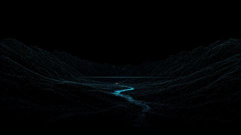
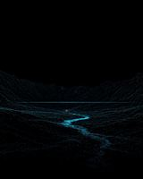
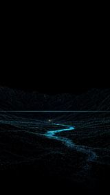
hero-champ
image · 2560x1440, 1152x1440, 810x1440 · 1.8 Mo (toutes déclinaisons)
Héros de l’accueil, candidat 3 : « champ de lumière », vallée relevée au lidar en nuage de points ion, ligne de balayage, un point chaud. Ombres légèrement relevées.
prompt
Scientific visualization of a lidar scan: a wide mountain valley with a river, rendered as a sparse 3D point cloud of discrete, separated, crisp glowing cyan points on pure black, every point clearly distinct like stars, fine topographic contour lines made of points follow the slopes, the cloud is bright in the foreground and dissolves into darkness toward distant peaks, one thin perfectly straight horizontal scan line of brighter cyan light crosses the valley, wide cinematic view from a low drone height, black sky, one single tiny warm orange point in the valley. High contrast, elegant, precise, no text, no logo, no people, no trees texture, no grass.
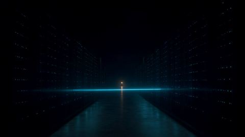
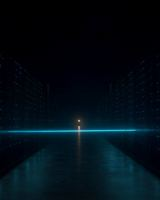
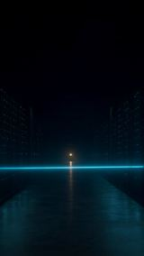
hero-datacenter
image · 2560x1440, 1152x1440, 810x1440 · 0.5 Mo (toutes déclinaisons)
Héros de l’accueil, candidat 1 : allée de centre de données, ligne de balayage ion, point chaud au fond (beaucoup d’espace noir pour le titre). Ombres relevées (gamma 0,78).
prompt
A vast silent data center at night seen from the middle of a long aisle, symmetrical one-point perspective, tall black server racks on both sides receding into darkness, thousands of tiny cyan status lights forming precise horizontal lines, a single thin horizontal beam of cyan light sweeping across the aisle at waist height, light haze in the air catching the beam, polished dark concrete floor reflecting the lights, far at the vanishing point one single small warm orange light. Photorealistic cinematic photograph, shot on a large-format digital cinema camera, 35mm anamorphic lens, deep black shadows, very low-key lighting, grazing light, fine cyan light (#3EC8FF) as the main accent, cold blue-black palette, subtle film grain, high dynamic range, ultra detailed, sharp focus, no text anywhere, no logo, no lettering, no people.
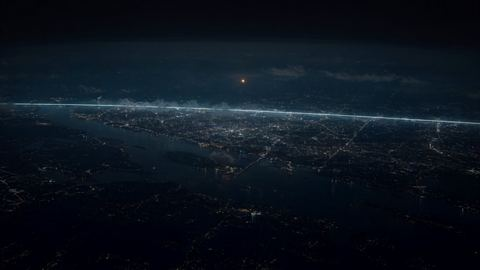
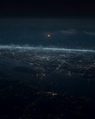
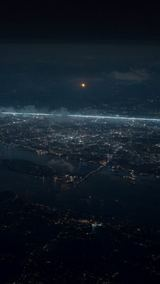
hero-ville
image · 2560x1440, 1152x1440, 810x1440 · 1.7 Mo (toutes déclinaisons)
Héros de l’accueil, candidat 2 : ville nocturne vue de très haut, une ligne de lumière la balaie. Ombres relevées (gamma 0,78).
prompt
Aerial night view from very high altitude over a large northern city beside a wide river, the city a dark carpet of tiny cold white and pale cyan lights, a single perfectly straight thin line of cyan light sweeping horizontally across the whole city like a scanner, light mist over the river, a few low clouds catching the city glow, gentle curvature of the horizon, one single warm orange light near the center. Photorealistic cinematic photograph, shot on a large-format digital cinema camera, 35mm anamorphic lens, deep black shadows, very low-key lighting, grazing light, fine cyan light (#3EC8FF) as the main accent, cold blue-black palette, subtle film grain, high dynamic range, ultra detailed, sharp focus, no text anywhere, no logo, no lettering, no people.
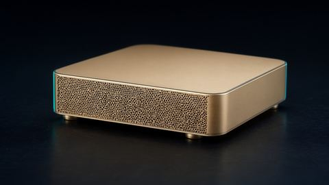
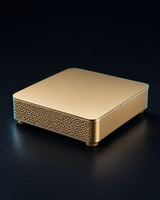
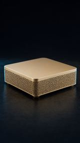
infra-dgx-spark
image · 2560x1440, 1152x1440, 810x1440 · 1.5 Mo (toutes déclinaisons)
Carte Infrastructure : ordinateur IA de bureau compact type DGX Spark (boîtier doré, façade en mousse métallique), photo studio sur fond sombre. Rendu IA sans logo NVIDIA ; à remplacer par une photo officielle si les visuels du fabricant sont autorisés.
prompt
A compact mini PC style desktop AI computer lying flat on a dark stone desk: square footprint, low profile, the box is three times wider than it is tall (a squat square block, height one third of the width, like two stacked hardcover books), the large flat top is smooth champagne gold anodized aluminium, the sides are the same gold metal with softly rounded corners, the front face is a full-height panel of porous open-cell gold metal foam, small rubber feet, three-quarter front view from 35 degrees above so the top surface and the front face are both visible, the device occupies the center third of the frame. Premium product photography in a dark studio, seamless deep black-blue backdrop, single soft key light at a grazing angle from the left, thin cyan rim light along the edges, subtle reflection on a dark glossy floor, 85mm lens, f/8, extremely sharp, physically accurate metal and glass, 8k detail, no text, no logo, no lettering, no brand marks, no labels.
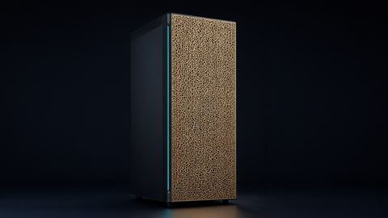
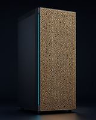
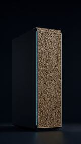
infra-dgx-station
image · 2560x1440, 1152x1440, 810x1440 · 2.6 Mo (toutes déclinaisons)
Carte Infrastructure : poste de travail IA type DGX Station (tour noire, façade en mousse métallique dorée), photo studio sur fond sombre. Rendu IA : sans logo NVIDIA ; à remplacer par une photo officielle si les visuels du fabricant sont autorisés.
prompt
A tall professional AI workstation tower, black chassis with a full-height front panel made of porous open-cell gold metal foam (sponge-like champagne gold metal texture), clean straight edges, a thin vertical line of cyan light at the side, standing alone on a dark floor, three-quarter front view, the tower fills two thirds of the frame height. Premium product photography in a dark studio, seamless deep black-blue backdrop, single soft key light at a grazing angle from the left, thin cyan rim light along the edges, subtle reflection on a dark glossy floor, 85mm lens, f/8, extremely sharp, physically accurate metal and glass, 8k detail, no text, no logo, no lettering, no brand marks, no labels.
infra-racks
image · 2560x1440, 1152x1440, 810x1440 · 3.2 Mo (toutes déclinaisons)
Carte Infrastructure : rangée de baies de serveurs en centre de données (portes ouvertes, voyants ion, un seul point chaud). Rendu IA, ombres relevées au post-traitement (gamma 0,78).
prompt
Inside a modern data center, a row of tall black server racks with open glass doors, each rack full of dense 1U and 2U servers with fine honeycomb front grilles and rows of tiny cyan status lights, neat cable management, three-quarter view along the row, the server fronts clearly visible and well exposed, lit by soft cool overhead light and a grazing key light that makes the metal grilles sparkle, polished dark floor with reflections, light haze in the background, one single warm orange status light on one server. Photorealistic architectural photography, 24mm lens, sharp, rich detail, dark blue-black palette with cyan accents, no text, no logo, no labels, no people.
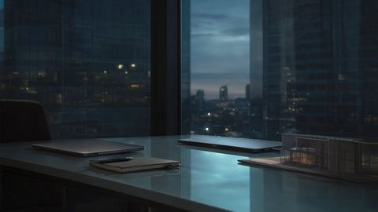
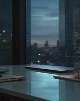
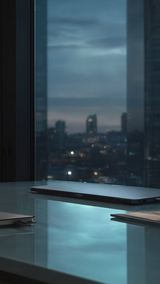
methode-consultation
image · 2560x1440, 1152x1440, 810x1440 · 0.7 Mo (toutes déclinaisons)
Section Méthode (consultation) : table de réunion au crépuscule, carnets, maquette d’architecture, ville qui s’allume. Ombres relevées (gamma 0,72).
prompt
A calm meeting table at dusk in a modern office with large windows, two laptops closed, a notebook and a pen, a thin architectural model, soft cyan reflections on the glass table, city lights beginning to appear outside, nobody in the scene, quiet and serious atmosphere. Photorealistic cinematic photograph, shot on a large-format digital cinema camera, 35mm anamorphic lens, dark low-key mood but well exposed, details clearly readable in the shadows, grazing light, fine cyan light (#3EC8FF) as the main accent, cold blue-black palette, subtle film grain, high dynamic range, ultra detailed, sharp focus, no text anywhere, no logo, no lettering, no people.
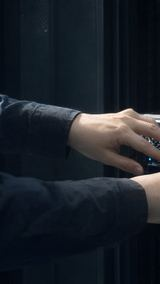
methode-installation
image · 2560x1440, 1152x1440, 810x1440 · 0.8 Mo (toutes déclinaisons)
Section Méthode (installation) : mains d’un technicien qui glissent un serveur dans une baie. Ombres relevées (gamma 0,8).
prompt
Close-up of hands of a technician wearing a dark long-sleeve shirt sliding a server into a rack in a dimly lit data center, the server front with honeycomb grille and tiny cyan lights, grazing light, careful and precise gesture, shallow depth of field, natural hands with five fingers. Photorealistic cinematic photograph, shot on a large-format digital cinema camera, 35mm anamorphic lens, dark low-key mood but well exposed, details clearly readable in the shadows, grazing light, fine cyan light (#3EC8FF) as the main accent, cold blue-black palette, subtle film grain, high dynamic range, ultra detailed, sharp focus, no text anywhere, no logo, no lettering, no people.
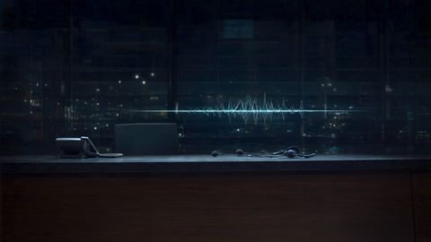
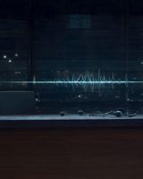
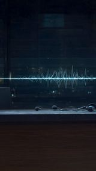
reception-accueil
image · 2560x1440, 1152x1440, 810x1440 · 1.3 Mo (toutes déclinaisons)
Page Réception virtuelle : comptoir d’accueil vide la nuit, téléphone et casque, une onde vocale en filets de lumière ion. Ombres relevées au post-traitement (gamma 0,62).
prompt
A sober modern reception desk in an empty office lobby at night, dark walnut and black stone, a single slim desk phone and a lightweight headset resting on the counter, large windows behind showing a blurred night city, a thin horizontal line of cyan light running along the front of the desk, a faint floating sound waveform made of fine cyan light lines hovering above the counter. Photorealistic cinematic photograph, shot on a large-format digital cinema camera, 35mm anamorphic lens, deep black shadows, very low-key lighting, grazing light, fine cyan light (#3EC8FF) as the main accent, cold blue-black palette, subtle film grain, high dynamic range, ultra detailed, sharp focus, no text anywhere, no logo, no lettering, no people.
reception-onde
image · 2560x1440, 1152x1440, 810x1440 · 1.4 Mo (toutes déclinaisons)
Page Réception virtuelle : casque-micro sur métal sombre, onde vocale en filets de lumière ion, un témoin chaud. Ombres relevées au post-traitement (gamma 0,62).
prompt
Macro photograph of a premium black wireless headset with a slim boom microphone lying on dark brushed metal, beside it a delicate sound waveform made of fine luminous cyan light threads floating in the air, shallow depth of field, bokeh of tiny cyan lights in the background, one tiny warm orange indicator light on the headset. Photorealistic cinematic photograph, shot on a large-format digital cinema camera, 35mm anamorphic lens, deep black shadows, very low-key lighting, grazing light, fine cyan light (#3EC8FF) as the main accent, cold blue-black palette, subtle film grain, high dynamic range, ultra detailed, sharp focus, no text anywhere, no logo, no lettering, no people.
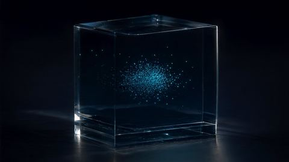
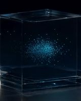
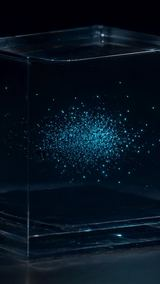
souverainete-coffre
image · 2560x1440, 1152x1440, 810x1440 · 1.2 Mo (toutes déclinaisons)
Section Souveraineté et sécurité : bloc de verre épais qui protège une constellation de points de données ion. Ombres relevées (gamma 0,8).
prompt
Abstract image of protection: a thick block of dark glass in the dark, inside it a small cluster of fine cyan light points like a data constellation, the glass edges catching a grazing white light, precise engineering, reflections on a black floor. Photorealistic cinematic photograph, shot on a large-format digital cinema camera, 35mm anamorphic lens, dark low-key mood but well exposed, details clearly readable in the shadows, grazing light, fine cyan light (#3EC8FF) as the main accent, cold blue-black palette, subtle film grain, high dynamic range, ultra detailed, sharp focus, no text anywhere, no logo, no lettering, no people.
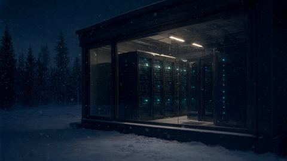
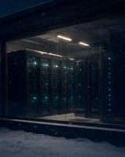
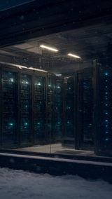
souverainete-serveur
image · 2560x1440, 1152x1440, 810x1440 · 1.7 Mo (toutes déclinaisons)
Section Souveraineté : pavillon de serveurs vitré dans une forêt boréale enneigée, la nuit (hébergement chez nous). Ombres relevées (gamma 0,75).
prompt
A secure server room inside a building in a snowy northern landscape at night, seen through a large window from outside: warm interior with black racks and cyan lights, snow falling softly in front of the glass, boreal forest silhouettes around, blue night, a sense of shelter and protection. Photorealistic cinematic photograph, shot on a large-format digital cinema camera, 35mm anamorphic lens, dark low-key mood but well exposed, details clearly readable in the shadows, grazing light, fine cyan light (#3EC8FF) as the main accent, cold blue-black palette, subtle film grain, high dynamic range, ultra detailed, sharp focus, no text anywhere, no logo, no lettering, no people.
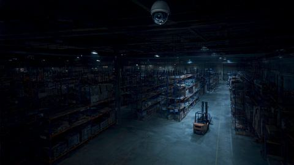
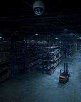
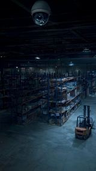
surveillance-entrepot
image · 2560x1440, 1152x1440, 810x1440 · 2.1 Mo (toutes déclinaisons)
Page Surveillance IA : entrepôt la nuit vu depuis une caméra au plafond (chariot élévateur, allées). Ombres relevées au post-traitement (gamma 0,62).
prompt
High-angle view from a ceiling security camera over a large empty warehouse at night, tall shelving aisles with pallets, cold low light, faint blue tint, a single forklift parked, wide angle slightly distorted like a real CCTV camera, clean and sharp, deep shadows, nobody in the scene. Photorealistic cinematic photograph, shot on a large-format digital cinema camera, 35mm anamorphic lens, deep black shadows, very low-key lighting, grazing light, fine cyan light (#3EC8FF) as the main accent, cold blue-black palette, subtle film grain, high dynamic range, ultra detailed, sharp focus, no text anywhere, no logo, no lettering, no people.
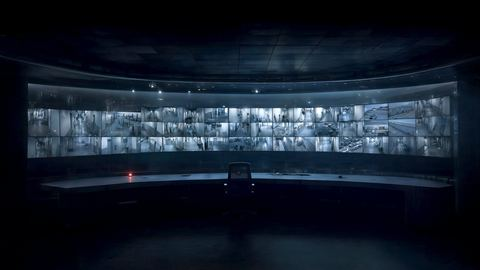
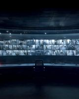
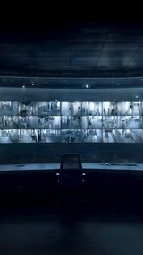
surveillance-salle
image · 2560x1440, 1152x1440, 810x1440 · 1.5 Mo (toutes déclinaisons)
Page Surveillance IA : salle de surveillance vide, mur d’écrans incurvé, une seule alerte rouge. Ombres relevées au post-traitement (gamma 0,62).
prompt
A dark modern monitoring room at night, a long curved desk facing a large wall of many video screens showing grey security camera views of corridors, parking lots and warehouses (abstract, no text on the screens), the screens give a cold blue glow, an empty ergonomic chair, one single small red alert light on the desk, clean architecture, wide shot. Photorealistic cinematic photograph, shot on a large-format digital cinema camera, 35mm anamorphic lens, deep black shadows, very low-key lighting, grazing light, fine cyan light (#3EC8FF) as the main accent, cold blue-black palette, subtle film grain, high dynamic range, ultra detailed, sharp focus, no text anywhere, no logo, no lettering, no people.
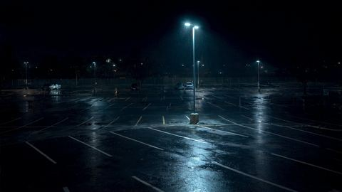
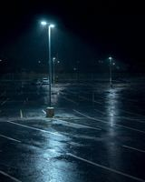
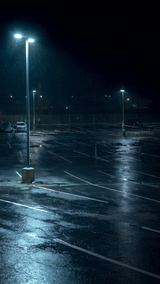
surveillance-stationnement
image · 2560x1440, 1152x1440, 810x1440 · 2.8 Mo (toutes déclinaisons)
Page Surveillance IA : stationnement vide la nuit sous la pluie, vu d’une caméra sur poteau. Ombres relevées au post-traitement (gamma 0,62).
prompt
An empty outdoor parking lot at night seen from a high pole camera, wet asphalt reflecting sodium and cold LED lights, painted lines, a few parked cars, a fence and dark trees at the edge, light rain mist, wide angle security camera perspective, cinematic, nobody in the scene. Photorealistic cinematic photograph, shot on a large-format digital cinema camera, 35mm anamorphic lens, deep black shadows, very low-key lighting, grazing light, fine cyan light (#3EC8FF) as the main accent, cold blue-black palette, subtle film grain, high dynamic range, ultra detailed, sharp focus, no text anywhere, no logo, no lettering, no people.
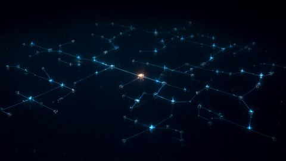
workstudio-flux
image · 2560x1440, 1152x1440, 810x1440 · 0.7 Mo (toutes déclinaisons)
Page WorkStudio : graphe de flux de travail en nœuds de verre reliés par des filets ion, un nœud chaud. Ombres relevées (gamma 0,8).
prompt
Abstract visualization of an automated workflow: in a dark infinite space, precise glass nodes connected by thin glowing cyan light lines form an elegant branching graph in perspective, small pulses of light travel along the lines from node to node, one node glows warm orange, 1 pixel grid on the floor fading into darkness. Photorealistic cinematic photograph, shot on a large-format digital cinema camera, 35mm anamorphic lens, dark low-key mood but well exposed, details clearly readable in the shadows, grazing light, fine cyan light (#3EC8FF) as the main accent, cold blue-black palette, subtle film grain, high dynamic range, ultra detailed, sharp focus, no text anywhere, no logo, no lettering, no people.